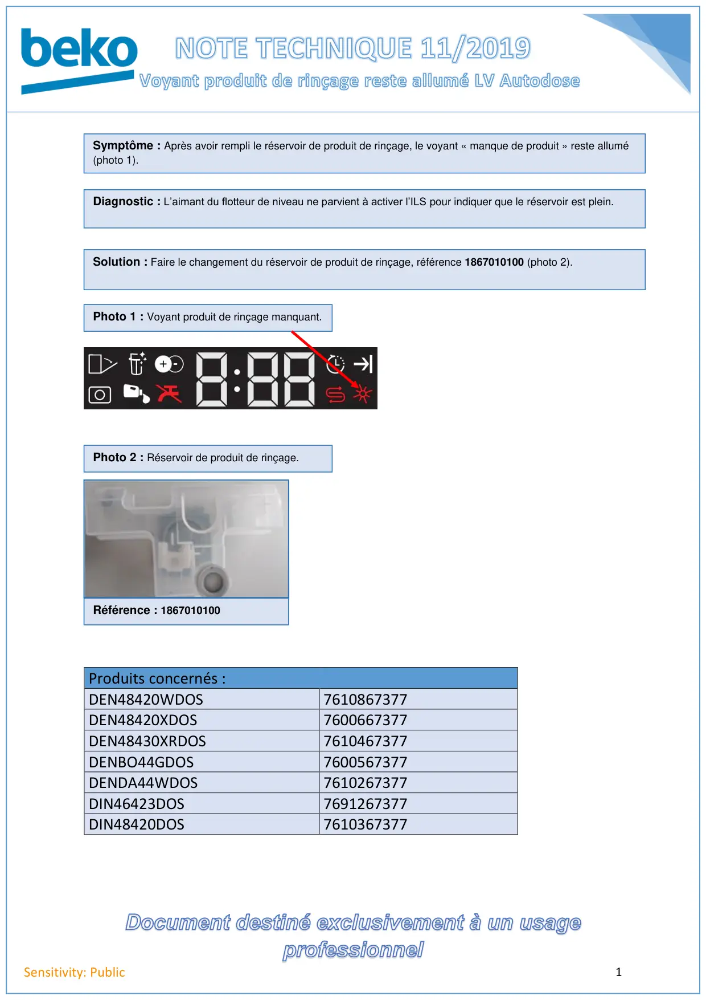

Voyant liquide rinçage lave vaisselle Autodose reste allumé

1Sensitivity: PublicProduits concernés :DEN48420WDOS7610867377DEN48420XDOS7600667377DEN48430XRDOS7610467377DENBO44GDOS7600567377DENDA44WDOS7610267377DIN46423DOS7691267377DIN48420DOS7610367377Symptôme : Après avoir rempli le réservoir de produit de rinçage, le voyant « manque de produit » reste allumé(photo 1).Diagnostic : L’aimant du flotteur de niveau ne parvient à activer l’ILS pour indiquer que le réservoir est plein.Solution : Faire le changement du réservoir de produit de rinçage, référence 1867010100 (photo 2).Photo 1 : Voyant produit de rinçage manquant.Photo 2 : Réservoir de produit de rinçage.Référence : 1867010100
1 / 1